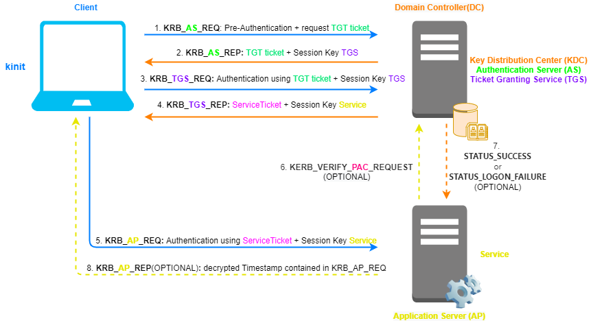

Authentication flow
Authentication flow
1.
KRB_AS_REQ:
Client send a cleartext request for a
Ticket Granting Ticket (TGT) to the
Authentication Server (AS) on the
Domain Controller.
The message contains:
◇
Client Principal Name(cname): user@REALM is the principal seeking authentication (e.g.: Administrator@EXAMPLE.COM)
◇
Service Principal Name(sname): krbtgt/realm@REALM is the principal used when we ask
Ticket Granting Ticket(TGT) to the
AS (e.g.: krbtgt/example.com@EXAMPLE.COM)
◇
IP_list(addresses): list of IP addresses that indicate the host where it is possible to use the ticket which will be issued
◇
Lifetime(till): requested expiration time of the ticket being requested
◇
nonce: random integer number
◇
Pre-Authentication(padata PA-ENC-TIMESTAMP):
Timestamp encrypted using
Client secret key(account's password hashed with
string2key function).
Pre-authentication is enabled (required) by default in Microsoft Kerberos environments. If it is disabled, as we will seen below, an Attacker can decrypt part of KRB_AS_REP by bruteforcing the
Client secret key.
If Pre-Authentication is not inserted in KRB_AS_REQ (for legacy support with Kerberos v4) the AS in Kerberos v5 response with “kerberos.error_code:eRR-PREAUTH-REQUIRED”
2.
KRB_AS_REP:
◇ Before reply the
Authentication Server (AS) verify the informations of KRB_AS_REQ:
▪ check if
Client Principal Name and
Service Principal Name exist in the database of
Key Distribution Center (KDC) ▪ decrypt the Pre-Authentication(Timestamp) using
Client secret key, if it is successful the requesting user is authentic
Now that all the the informations are verified, the
Authentication Server(AS) will reply with:
◇
Client Principal Name ◇
Ticket Granting Ticket(TGT)(ticket): encrypted using the
KDC secret key(
krbtgt account's password hashed with
string2key function) can be found under enc-part. Only the
Domain Controller can decrypt enc-part. By default
TGT is valid for 10 hours and contain:
▪
Service Principal Name(sname): not encrypted, as seen above usually is krbtgt/realm@REALM
▪
Client Principal Name ▪
IP_list ▪
Startime ▪
Endtime ▪
Session Key TGS: session key shared between the
Client and the
TGS ▪
PAC(authorization-data): It is the authorization-data that in Windows is called PAC.
It is signed(not encrypted) two times(
ietf.org), this mean PAC contain two checksum:
- signed with the
target Service secret key (PAC_SERVER_CHECKSUM)→
KDC(krbtgt account) secret key.
- signed with the
KDC(krbtgt account) secret key (PAC_PRIVSRV_CHECKSUM)
◇
informations encrypted using the
Client secret key (account's password hashed with
string2key function). This part of the message can seems that contains redundant informations, but is NOT! Because the information contained in the
TGT is encrypted using the
KDC secret key and because of that, it cannot be read by the
Client and needs to be repeated. Note that if
Pre-Authentication in KRB_
AS_REQ is not enabled, this part of informations can be brute-forced and decrypted by an Attacker by guessing the
Client secret key ▪
Service Principal Name: As seen above usually is krbtgt/realm@REALM
▪
Timestamp ▪
Startime ▪
Endtime ▪
Session Key TGS: session key shared between the
Client and the
TGS,
Client will use it to encrypt and authenticate communications with
KDC 3.
KRB_TGS_REQ:
Now that the
Client have proved to be what it says,
Client request to the
Ticket Granting Server (TGS) for a
ServiceTicket.
This request contain:
▪
Service Principal Name:Also called SPN. something like Service/example.com@EXAMPLE.COM
▪
Lifetime ▪
Authenticator: (
Client Principal Name(cname) +
Timestamp(ctime)) encrypted using "Session Key
TGS"
Kerberos Authenticator are used:
- when a Ticket is sent in the message
- to certify the
Client's knowledge of the session key between the
Client and
TGS - to help the who receive the message detect replay attacks by verifying that the Authenticator is of recently construction(thanks to the Timestamp)
▪
Ticket Granting Ticket(TGT) already encrypted with the
KDC secret key. It was received during
KRB_AS_REP4.
KRB_TGS_REP:
◇ Before reply the
TGS verify the informations of KRB_TGS_REQ:
▪ Lifetime in the
TGT is not expired
▪ If the
TGT is older than 20 minutes, the
PAC signed(checksum with
KDC(krbtgt account) secret key) inside it is verified
▪ The
Client Principal Name present in the Authenticator matches the one present in the
TGT ▪
Service Principal Name exist in the database of the
Key Distribution Center (KDC) that is the main service of the Domain Controller ▪ Authenticator is not present in the replay cache of
TGS and has not expired
▪ Source IP address of KRB_TGS_REQ is one of those contained in IP_list
◇ Now that all the the informations are verified,
TGS can reply with:
▪ informations encrypted using “Session Key
TGS”
-
Service Principal Name:
-
Timestamp -
Lifetime -
Session Key Service: another Session Key that this time will be shared between the
Client and the
Service ▪
ServiceTicket: encrypted using
Service secret Key, so that only the
Service on the Application Server can decrypt it. For the
Client this part remain encrypted
-
Client Principal Name -
Service Principal Name: not encrypted
-
IP_list -
Timestamp -
Lifetime -
Session Key Service -
PAC(authorization-data): This
PAC is used for verification by the
Service in optional step 6.
It is signed two times(
ietf.org), this mean PAC contain two checksum:
→ signed with the
target Service secret key (PAC_SERVER_CHECKSUM)→
Service secret Key → signed with the
KDC(krbtgt account) secret key (PAC_PRIVSRV_CHECKSUM)
5.
KRB_AP_REQ: The
Client ask to the
Application Server to access to the Service.
While the previous phases, with the
KDC, are standardized. KRB_AP_REQ is not standardized but it can vary depending on the
Service. The programmer of the
Service has the job of establish a strategy with which the
Client can prove its identity to the server.
example: ▪
Authenticator: (
Client Principal Name +
Timestamp) encrypted using "Session Key
Service"
▪
ServiceTicket: already encrypted by
KDC with the
Service secret key(target service account's password hashed with
string2key function; this is done so that only the
Service on the Server can decrypt it)
Service on the Application Server VERIFY the informations of KRB_AP_REQ:
◇
ServiceTicket is not expired
◇
Client Principal Name present in the Authenticator matches the one present in the
ServiceTicket ◇ The Authenticator is not present in the reply cache of the
Server and has not expired;
◇ Source IP address of KRB_AP_REQ is one of those contained in IP_list
6) KERB_VERIFY_PAC_REQUEST(OPTIONAL):
Service(LSASS process) send to
KDC(netlogon service(NRPC)) the signature of
PAC in the
ServiceTicket .
▪ for Service Accounts, by default the verification is disabled
▪ for Computer Accounts, the verification is enabled
8) Response. KDC verify if the signature of PAC (OPTIONAL):
▪
STATUS_SUCCESS: Requested operation succeeded. Value in hexadecimal: 0x00000000
▪
STATUS_LOGON_FAILURE: Authentication failed. Value in hexadecimal: 0xC000006D
8.
KRB_AP_REP(optional): if the
Client has requested to the
Application Server to verify its own identity(mutual authentication):
the Server response returns:
◇
Timestamp(in cleartext) contained in KRB_AP_REQ in the Authenticator encrypted by the
Client with the "Session Key
Service"
Bibliography:
•
https://tools.ietf.org/html/rfc4120 (2005)
•
https://tools.ietf.org/html/rfc1510 (1993)
•
https://zeroshell.org/kerberos/kerberos-operation/•
https://www.tarlogic.com/en/blog/how-kerberos-works/•
https://swarm.ptsecurity.com/kerberoasting-without-spns/•
https://medium.com/@robert.broeckelmann/kerberos-wireshark-captures-a-windows-login-example-151fabf3375a•
https://docs.oracle.com/cd/E23824_01/html/821-1456/refer-11.html•
https://docs.microsoft.com/en-us/openspecs/windows_protocols/ms-kile/b4af186e-b2ff-43f9-b18e-eedb366abf13{kind=link}